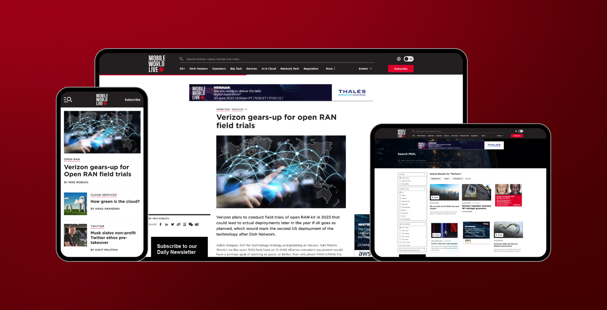
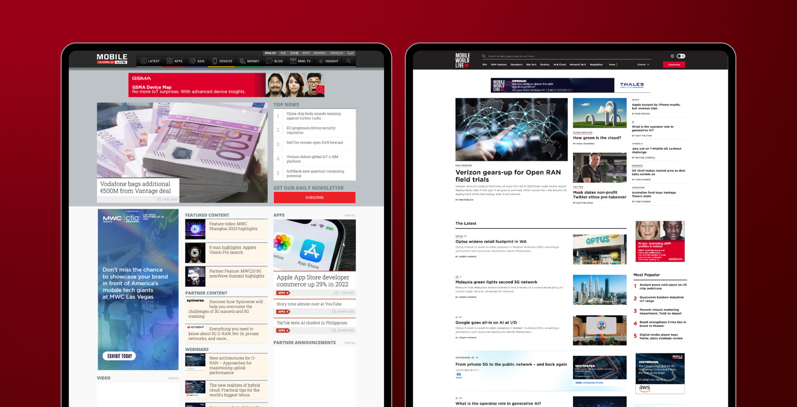

Problem Statement
The existing information architecture of Mobile World Live was complex and challenging to navigate. In addition to this, the website was due for a rebrand to match the new GSMA brand guidelines. The task at hand was to create a user-friendly interface that was not only modern and aesthetically pleasing but also logically structured and easy to navigate.
Approach & Solution
Stakeholder Feedback & Meetings
I initiated the design process by arranging and participating in numerous meetings with executives, team leaders, stakeholders, developers, and the brand team. These discussions provided me with essential insights to shape our design decisions.
User Research & Analysis
I undertook comprehensive user research which included stakeholder surveys, workshops, key insights analytics, and competitor analysis. These findings formed a complete understanding of the users' needs and expectations, driving the direction of my design.
Design & Handover
Following the research phase, I conceived and delivered a new, intuitive, and visually engaging site map along with fresh navigation ideas to the Mobile World Live team. This collaborative effort allowed me to create a product that balanced both users' needs and business priorities.
Partner Content & Ad Revenue
Recognising the critical role of partner content and ad revenue to the client, I developed a distinctive design strategy that emphasised these elements. I selected a prominent cyan colour scheme for partner content and integrated larger, high-quality ads, aiming to boost partner content consumption and ad revenue.

Impact & Results
Boost in Partner Content Consumption & Ad Revenu:
With a unique design strategy, I put partner content at the forefront, using a distinctive design and colour scheme. I incorporated larger, high-quality ads, significantly increasing partner content consumption and ad revenue for Mobile World Live.
Enhanced Site Navigation & User Engagement
I helped craft an intuitive information architecture that simplified site navigation. The introduction of dynamic content kept users engaged, encouraging them to explore more of the website, thus raising overall user engagement.
Increase in User Satisfaction
The reimagined, engaging, and user-friendly interface significantly improved user satisfaction. This revamp attracted more repeat visits and improved user retention rates, ultimately creating a more positive user experience.
Uplift in Stakeholder Confidence
The successful redesign of Mobile World Live's digital presence has raised the bar, exceeding both company and stakeholder expectations.
Conclusion
Leading the Mobile World Live project has been an important step in my work as a designer. It's a chance for me to apply my skills, balance stakeholders' needs, and consider business priorities while making sure we follow the best UX practices. This project demonstrates how thorough research, careful planning, and a well-done rebrand can create a digital presence that's both functional and appealing.